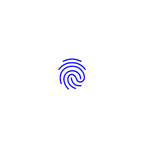
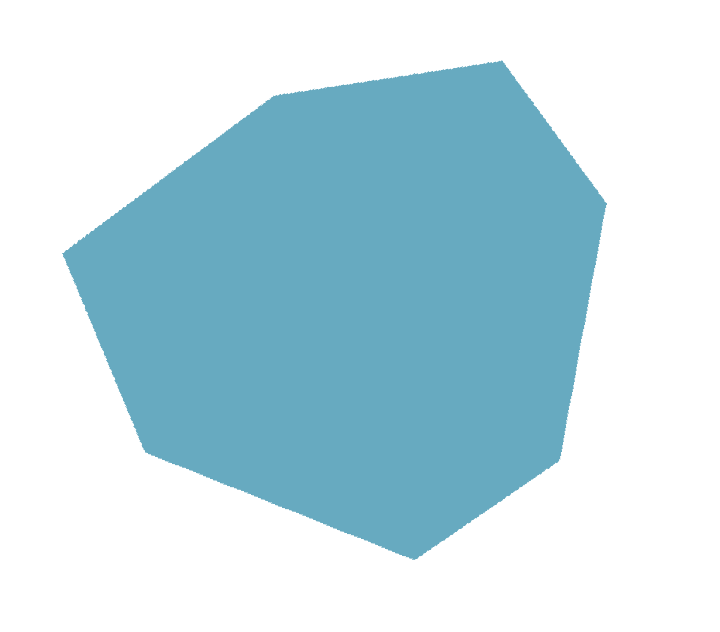
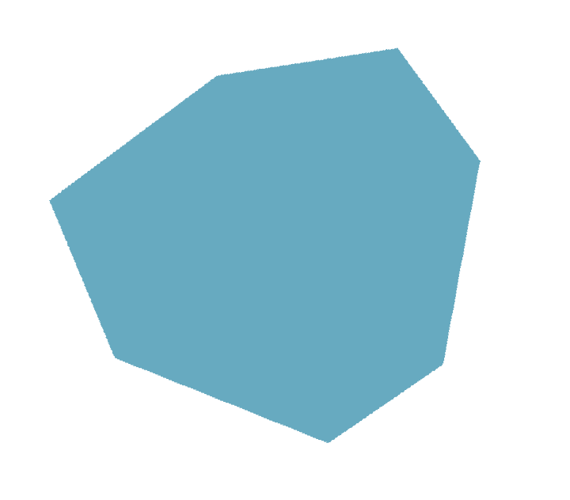

Le Grand Bain des champs, by la French Tech 🌻
2021French Tech Aix-Marseille est un collectif d’entrepreneurs et d’acteurs de l’écosystème aguerris, tourné vers l’international avec un ancrage local fort. Des hommes et des femmes qui sont animés par un même amour de notre territoire et qui mettent leurs compétences, réseaux et énergies à son service pour le faire grandir & rayonner. Ils croient en une tech inclusive de tous les publics et respectueuse de l’environnement. Ainsi, Le Grand Bain c’est LE festival de l’année pour faire d’Aix-Marseille le spot incontournable où l’on pense et développe un futur (tech) désirable.
Identité Visuelle
 
